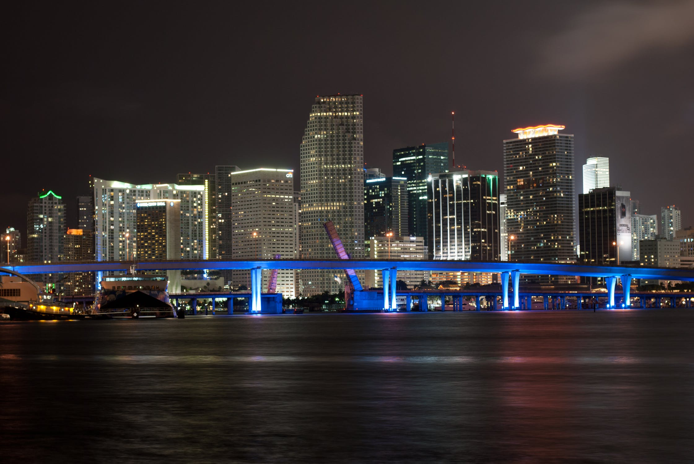

Public Funding of the Arts, why should we care?
The Importance of the Arts
The public appreciation toward the humanities has declined significantly over the years as day to day work schedules and lesser forms media have overtaken the public eye. Political topics shifted away from a finer appreciation of the arts when it is just as important to the everyday person. The general public’s awareness toward the arts must be made known or the United States will continue to decline in comparison to the rest of the world in placing value toward public art projects. The people of the United States must be made aware of just how important the public arts are and why the government should place a larger emphasis on its role within society. The value of public art is immeasurable in terms of influence though there are studies that can help define an idea of how it improves the general public. Public works and restoration fall in line with public arts spending and governments at the local and state level who have taken initiative to beautifying their cities have created safer and cleaner locations. In the previous link, it is made clear that governments who spend more toward the humanities and promotion of a public space dedicated toward art diversify lifestyles and inspire citizens. It also creates a higher economic value in the area as tourists and other business draw from the general attractions. An example of a district dedicated to art within the city is the Wynwood District
Art Districts and their Benefits
The Wynwood district was generally considered a low income area before it became the largest open area art muesum with large murals and attractions. It has since been a crucial tourist location. Thus, providing income and joy to the citizens and city in a mutual symbiotic relationship. A model toward restoring real estate and creating art around the area for economic and quality of life improvements can be viewed in many cities across the United States. Neighborhoods such as Brooklyn, downtown Washington D.C., the L.A. Arts District have proven that time and time again, success is met with a turn toward emphasizing the humanities. While the Federal Government is more responsible toward National Museums and conservation of National Monuments, it still plays a critical role in how much funding may be granted with the direct public spending on the arts. 
The Current Situation
The National Endowment for the Arts (see link above) stated in a two decade old report that “...the United States spends about $6 per person on direct public spending on arts, the lowest of any of the countries tracked by the ACE study.” Their budget for 2000, according to their data was roughly $ 97,627,600 whereas their budget last year has only gone up to $155,000,000. Steadily increasing throughout the years, but at a rate that is still not on the same level as Germany, a smaller economy than the United States, yet an influential powerhouse in the EU. That same research from 2000 stated that Germany spent about $86 per capita on direct public spending on arts, where recent reports now ranks Germany at spending €123 (October 2019: ~137 dollars) per capita or roughly 1.8 billion euros (~2 million dollars) for the Arts. This is an immense number for Germany and in relation to the United States, this presents a sad reality of where public art funding is heading. In addition to this, according to an NPR report, the government is wasting 1.7 billion dollars worth of taxpayers money on maintaining empty buildings. There should be a reallocation of these funds into the arts and other aspects of the National Endowment for the Arts to enrich the citizens of the United States.
What you can do and why?
At the moment, the actions that should be taken is to spread awareness of this situation. The fact that American culture and the support to further enrich it is dying out to old office buildings and further cuts. It is important to talk about what is happening in relation to the arts and realize that it is much more involved in day-to-day life. As contemporary society motivates toward the applied and liberal arts, the fine arts are just as essential. Other methods included, become active in the movement of promoting the arts, as there is a lot more going on with the National Endowment for the Public Arts (see Facebook link below). The next question is why? Why should people care and do this? If neighborhoods are not enough, and if culture is too vague, and it is too much to see at a Facebook page, all one should care about at the surface level is quality of life. The public arts enhance society as a whole, not just through growing economies, but also ensure that the current and future generations engage in intellectual discussion and conversation. The public arts facilitate all types of learning beyond that of economic growth and beautification. The public arts allow everyone to have cultural pride and belonging to a greater community at the National level.